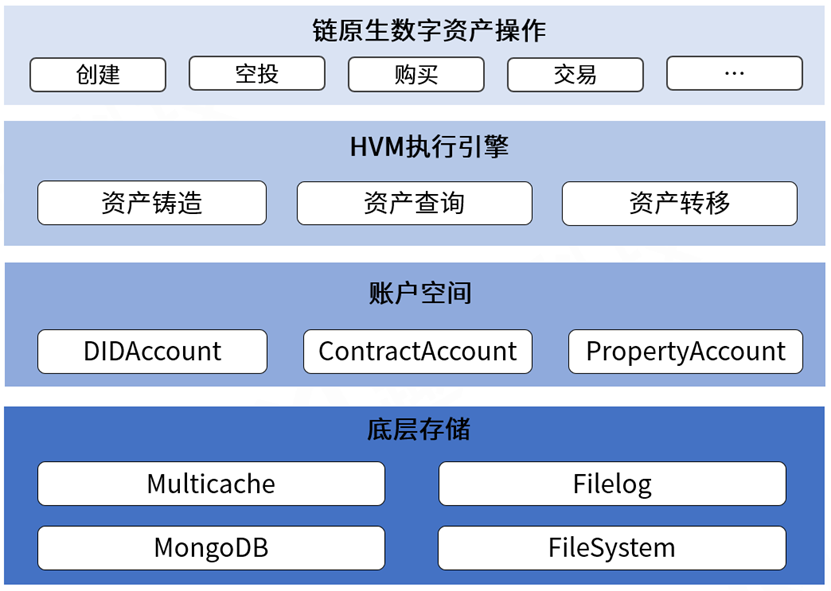

数字资产¶
NFT¶
NFT（Non-Fungible Token，非同质化代币) 定义了一种生态中不可分割的、具有唯一性的代币交互和流通的接口规范，是用于表示数字资产的唯一加密货币令牌。NFT由于其非同质化、不可拆分的特性，使得它可以锚定现实世界中商品的概念，例如通证化的门票、一瓶珍贵的红酒、独特设计的珠宝等等。NFT 可将任意有价值的事物通证化，并追溯该信息的所有权，实现信息与价值的交汇。
平台设计了链原生支持数字资产账户，解决一个合约账户存储全量数据的问题，实现资产全平台唯一性，增加互操作性。在通用链的基础上，将NFT资产定义为区块链账户，在智能合约中发布的NFT资产可直接映射到底层区块链账户中，基于这一系列操作完成对NFT资产的全生命流程功能支持。NFT链功能通用，可构建多使用场景的NFT应用，满足业务使用场景功能和非功能需求。

链原生数字资产架构如图所示，其具有以下功能特性：
支持ERC-721、ERC-1155、ERC-998，性能更高；
支持创世数字资产、创世账户、创世合约的发布；
基于索引数据库灵活支持对特定用户、特定资产、特定操作的数字资产交易链路溯源；
基于大文件功能，原生管理资产源文件，支持上传、下载、更新等操作及相关权限管理；
联盟链交易费用稳定，可监管性强。